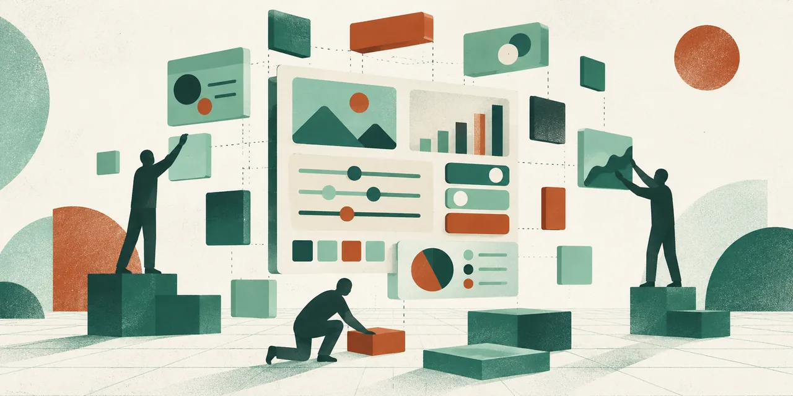

TechCrunch가 10월 9일 a16z 파트너 Olivia Moore와 나눈 인터뷰에서 소비자 AI의 수익 모델 논쟁을 다뤘습니다. Moore는 구독·사용량 요금에 몰린 매출 대신 광고나 저비용 모델 같은 가능성을 제안했습니다. 이는 투자자의 전망이며 소비자 선호나 성공 사례를 측정한 결과는 아닙니다.

생성형 인터페이스
소비자 AI는 대중시장을 얻지 못했나—아니면 돈을 내는 사람만 좁은가
a16z의 8월 미국 전자영수증 패널에서는 적격 소비자 4.5%가 ChatGPT·Gemini·Claude 중 하나에 개인 유료 구독 중이었습니다. 관측된 소비자 AI 지출의 19.5%는 상위 1%가 차지했습니다. 패널 추정치와 인터뷰이의 전망을 구분해 읽어야 합니다.